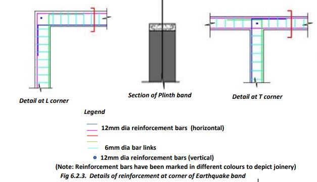
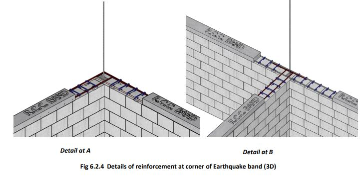

Plinth is made at least 30 cm above the ground level. A higher plinth level is preferable to prevent rainwater, snakes, etc., from entering the house during floods.
Providing RCC Plinth Band:
1. Install Formwork: Construct formwork along the edges of the plinth masonry using timber, plywood, or metal sheets to define the plinth band's shape. Ensure to secure shuttering and alignment.
2. Place Reinforcement Bars: Provide horizontal bars for RCC band/Bond Beam as per drawing (next page). Allow vertical seismic bars at the corners to pass through the horizontal bars.
3. Pour Concrete: Fill the formwork with M20 concrete mix, compacting it thoroughly to remove air voids.
4. Cure and Finish: Let the concrete cure for approximately 28 days. Keep it moist during curing to prevent cracking. Remove the formwork carefully and finish the surface as desired.
Details of Making RCC Bands
 
• A 75 mm thick RCC plinth band is provided continuously over all the walls at the plinth level. This provides safety against earthquakes and non-uniform settlement of the foundation.
• The plinth bands/beams are reinforced with at least two 12mm dia steel bars that bend at wall corners to enter the adjoining walls. The steel bars should not terminate at corners or T-junctions of walls.
Tips to Remember:
1. Foundation and Soil: Ensure the ground is leveled, soil compacted, and drainage provided to prevent settling and water accumulation.
2. Material Quality: Use high-quality concrete (M20+), bricks, or stones, and reinforce with steel for strength and durability.
3. Dimensions and Alignment: Follow specifications for uniform height and width, ensuring accurate measurements and level alignment to avoid structural issues.
Construction of Plinth Band
● Entire Himachal Pradesh lies in a strong earthquake zone. Zone B is particularly more likely to suffer damages from strong earthquakes.
● It is necessary to bind all the walls and columns horizontally and to bind the foundation, walls, and the roof vertically to resist earthquake damage for safety.
● Provide 2 nos 12 mm dia horizontal steel bars on all the walls tied together by 6mm dia steel bar links (at 20cm c/c) and cast into 75mm thick cement concrete bands at plinth, sill, lintel, and roof level exactly as shown in the figures below.
Construction of Plinth Band (Plinth Masonry)
● Provide steel bars of RCC plinth band and MS door frames on the plinth masonry and then provide 75mm cement concrete to cast the RCC plinth band properly encasing the bars in concrete.
● Ensure that steel bars in the RCC bands do not terminate at the corners and wall junctions. The bars must bend at corners and junctions and go 500 mm into the adjacent walls as shown in the given figure. The vertical bars at corners and junctions pass through the RCC bands and wall corners without any break to tie the house vertically and horizontally.
● After 36 hours of providing the RCC band at plinth level, masonry in the superstructure can be started.
● Continue water curing of masonry and plinth band so that it does not dry up for at least 28 days.
● The masonry in the superstructure can be in bricks or concrete blocks of at least 60kg/sq.cm strength. Use 1:5 cement+sand mortar for masonry.